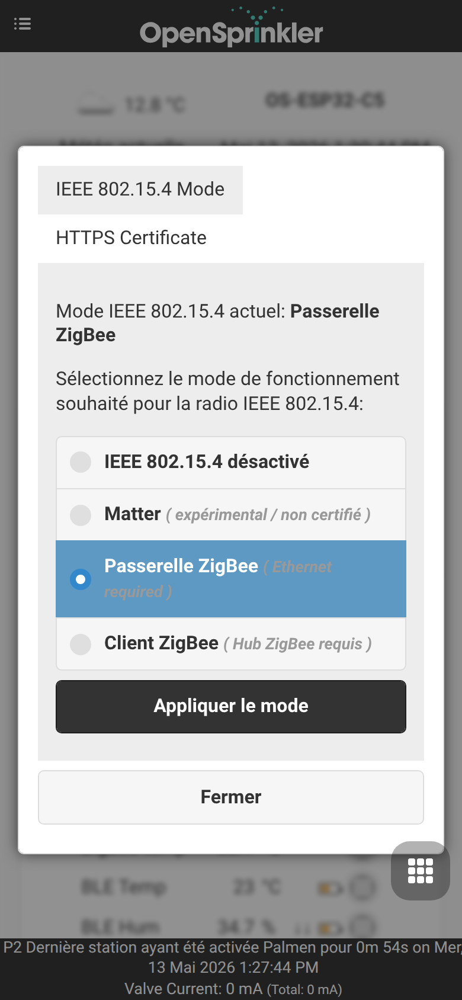
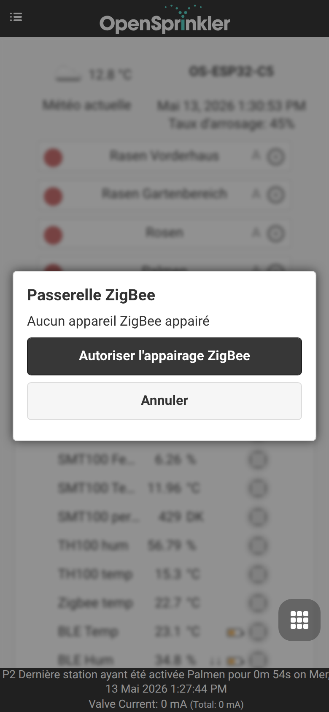
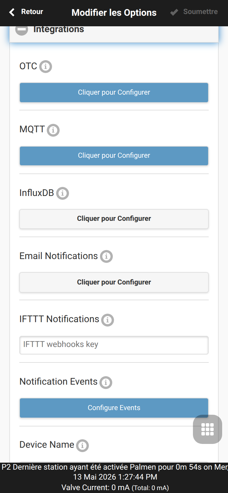
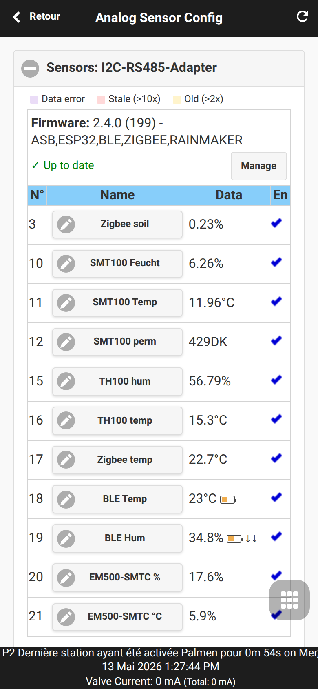
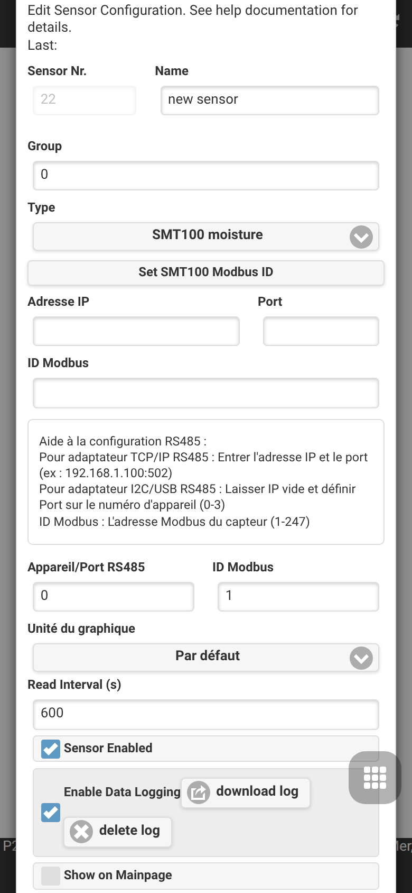

Intégration de la passerelle Zigbee
OpenSprinklerPro intègre des capacités de coordination Zigbee natives directement sur la carte ESP32-C5. La solution mono-puce ESP32-C5 prend en charge le Wi-Fi 6 double bande 2,4 GHz, le Bluetooth 5 (LE) et la norme 802.15.4 (Zigbee 3.0 / Thread).
En utilisant la variante Zigbee du micrologiciel, votre contrôleur OpenSprinkler fonctionne comme un coordinateur Zigbee complet. Il peut être appairé avec des capteurs domotiques, des vannes intelligentes, des sondes d'humidité du sol et des moniteurs de température afin d'adapter vos programmes d'arrosage en fonction des conditions locales en temps réel.
📸 Guide pas à pas de configuration
Ce guide vous montre comment configurer le mode radio, appairer des appareils Zigbee et associer leurs attributs à des capteurs analogiques.
Étape 1 : Configuration du mode radio
Tout d'abord, vérifiez que votre contrôleur ESP32-C5 est réglé sur le bon mode radio. Par défaut, l'ESP32-C5 peut fonctionner dans plusieurs modes. Accédez aux paramètres de mode via le menu latéral sous Setup ESP32 Mode.

Pour utiliser Zigbee, activez le mode Zigbee Gateway / Coordinator. Cela initialise la radio native 802.15.4 pour la gestion des canaux Zigbee, le routage des appareils et la création du réseau.
Étape 2 : Association et appairage des appareils
Une fois le mode Zigbee activé, vous pouvez accéder à la page ZigBee Gateway depuis le menu latéral. Cette page vous permet de contrôler la fenêtre d'appairage et de gérer les appareils physiques enregistrés.

- Cliquez sur Permit Join (généralement pendant 60 secondes) pour ouvrir le réseau aux nouveaux appareils.
- Mettez votre appareil Zigbee (par exemple, une électrovanne intelligente GIEX, un capteur de sol Tuya ou un capteur de température Xiaomi) en mode d'appairage (généralement en maintenant son bouton enfoncé pendant 5 secondes).
- L'appareil sera détecté, se verra attribuer une adresse courte et affichera son adresse IEEE 64 bits, son type d'appareil et la qualité du signal (LQI).
Étape 3 : Options d'intégration globales
Sous Edit Options → Integrations, assurez-vous que les alertes et les liaisons de coordonnées Zigbee sont actives. Cela permet au contrôleur de relier proprement les signaux externes au cycle de planification local.

Étape 4 : Configuration des capteurs multiples et étalonnage
Pour utiliser les données des capteurs dans vos ajustements de programme, accédez à Analog Sensor Configuration depuis le menu de bas de page. Ce tableau de bord affiche tous les capteurs logiques actifs, leurs liaisons physiques et l'état de leur batterie.

Étape 5 : Ajouter ou modifier un capteur Zigbee
Cliquez sur Add Sensor (ou modifiez un capteur existant) pour associer un attribut spécifique de l'appareil Zigbee (comme le pourcentage d'humidité du sol ou la température) à un emplacement de capteur analogique.

Dans cet éditeur, vous pouvez : - Attribuer un Nom reconnaissable au capteur. - Choisir le Type de capteur (par exemple, humidité, température, batterie, etc.). - Sélectionner l'Appareil source (Source Device) dans la liste déroulante des nœuds Zigbee appairés. - Définir des décalages d'étalonnage personnalisés et des seuils de déclenchement.
🛠️ Appareils pris en charge et détails techniques
Le micrologiciel interne prend en charge les clusters Zigbee 3.0 standard : - 0x0402 : Mesure de température (Tuya, Xiaomi, Sonoff) - 0x0405 : Humidité relative / Humidité du sol (GIEX, Tuya, Moes) - 0x0001 : Configuration de l'alimentation (rapports sur le pourcentage de batterie)
Mise en correspondance des appareils multicanaux
Lors de l'utilisation de vannes intelligentes multicanaux complexes (comme la vanne d'arrosage double sortie GIEX GX02), le coordinateur sépare les états des vannes individuelles et les canaux de télémétrie en sous-appareils logiques distincts. Cela garantit que chaque zone peut être déclenchée ou ajustée indépendamment.
Coexistence radio
L'ESP32-C5 gère simultanément les analyses BLE, le trafic Wi-Fi 6 et les paquets Zigbee 802.15.4. Lors des analyses de capteurs BLE, le protocole d'arbitrage du trafic de paquets (PTA) Zigbee réduit momentanément la priorité des points de terminaison Zigbee pour éviter les collisions radio et la perte de paquets, rétablissant instantanément la priorité complète lorsque l'analyse active s'arrête.